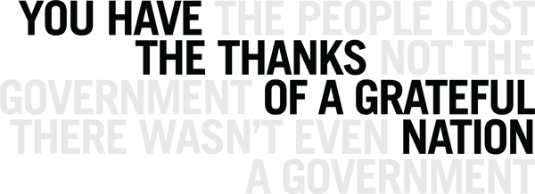

-
Things Done With Words
by Idiom January 1, 2011
The following statement was produced as part of Conversations on the Line, a project within the exhibition How To Do Things With Words at Parsons. Organizer Huong Ngo and artist and curator Melanie Crean emailed with Stephen Squibb to continue the conversation.
On Collaboration: “How To Do Things With Words”
Authors: Melanie Crean, Huong Ngo, Grant Noel, Or Zubalsky
Contributors: Rachel Bernstein, Gabrielle Guglielmelli, Julio Hernandez, Andrew PersoffIts really hard to hear, broken up and such
Can people hear me?
I just hear some noises of voices
The sound is broken
I can’t really really hear you
Your words are coming in and out
Your voice is broken
No its broken, broken for me tooThis marked the beginning of a series of online conversations about language, power and systems of education between a group of ten artists and design students from the US, speaking with ten medical students from Baghdad during the summer of 2010. As it quickly became evident, a larger conversation was actually taking place, about the nature of cross-cultural communication via contemporary technologies.
Though initial communication took the form of asynchronous, boisterous and chaotic chats, members of the group shared information that was remarkably intense and personal, leading to an unusual intimacy forged between people who had never met each other. Perhaps it is sometimes easier to say difficult things from a position of relative anonymity. Through the frustrating disruptions of technical and electrical failures, Iraqi students described how in pre-2003 Iraq, they were given a form in school to pledge their loyalty to the Baathist party. They could choose to do this, or drop out of school. Students were afraid to rebel, or even discuss their opposition in public for fear of violent retribution. In post 2003 Iraq, the students described an opposite extreme: because of the large number of political parties and the feeling that no one was ultimately in charge, many teachers proselytized for their political party directly in the class room. In contrast, an American student described a public school in the conservative South as imposing status quo- conservative, Christian, heterosexual norms, or “everything that we got from the rest of society and TV. It is a sneaky imposition, because it hides itself, and makes itself feel natural. If you disagree, then you feel unnatural.”
During the second part of the project, communication took on a markedly different texture: design teams worked in local groups, forming their own strategies to create a response based on the initial discussions. Rather than being about exchange across large distances, intensity was formed through collaborations negotiated with people sitting in the same room. A reflection of the collaborative process from one group:
“We, Me, We: As the youngest of 6 (youngest of 3, youngest of 2, oldest of 3…), I prefer plural nouns. The statement, “we are celebrating ______ (fill in the holiday) together” makes me glow inside. As a collaborator, these words are essential in the process of simplification, inclusion, and definition, but also elide complexity, nuance, and contradiction. The we in the case of our recent collaboration are students and artists from Parsons working on a series of posters and zines about the personal trauma of war and displacement and its portrayal in the media. Yet, the we began before that with conversations among students and teachers around the U.S. and Iraq, and before that with writers of headline news (the text of which was appropriated to contrast with personal stories of immigration), and before that with the many we’s it took to make a war; many wars, in fact, because like Lay’s potato chips, you can’t seem to have “Just One.” The binary opposition that we see as “me vs. you” is actually a problem of not seeing at all times that a we that exists for you at all times. The utopian potential for inclusion is a commodity of social media, but it is only as good as every member actively engaged in the process of making space for we.
Making we: Snacks, jokes, laughter. We have to be in the same room to do anything because to do something, you have to do nothing, at least for a little bit. Some of us have not been involved in the political side of art before, but working in a group made that new environment comfortable. There is a relieving factor in a collaborative effort that touches upon painful subjects. The hugeness of war is almost petrifying when approached by a single person, and attempting to communicate ideas that comment on it is something that requires many points of view. Not only because every person has different interpretations, ideas and skills, but also because the number of people present in a room helps to bear the heaviness of the subject. Silly as it may sound, the exchange of snacks and jokes affects the exchange of ideas directly.”
One of the most telling things about the experience is that it continues with incredible energy via the group Fantastic Futures which will continue the exchange and conversation between Iraq and the U.S. through the exploration of sound. So here’s to hearing more soon from a future fantastic…

Stephen Squibb: How would you describe the sort of work you see this project performing?
Huong Ngo: The project, initiated and organized by Melanie Crean, began as a series of conversations among medical students at the University of Baghdad and students and educators in the United States (mostly from Parsons, Pratt, but some from other places in NY) over Skype about education, power, and politics. Melanie brought me into the project last spring to help structure the conversations and I introduced my former students to the project. The conversations began with anecdotes about our respective classroom experiences, and then branched into issues of human rights, women’s rights, politics, and daily struggles in post-war Iraq.
In the second phase of the project, we broke into 3 groups. Each addressed a particular aspect of human rights. The Iraq group focused on the reality of being a woman in Iraq, Melanie led a group focusing on the Iraq and US constitutions, and I led a focus on immigration. To realize the material parts of the project, I invited a group of Parsons students that I was teaching this fall. We collaborated on a series of posters that juxtaposed text from news headlines with personal narratives about immigration. They were screenprinted so that half of the text was nearly invisible.
SS: How do these projects take place as works of art, do they demand a different approach from the artist?
Melanie Crean: For Conversations on the Line, I was interested to work in a more collaborative, process oriented framework. The project began with weekly Skype conversations comparing experiences in the class room, and went on to discuss student activism, the corporatization of media in the two countries, freedom of speech, and daily life in post-war Iraq. The conversations inadvertently began to address the nature of online communication: at once amazing for its ability to reach across cultural boundaries, but fraught with technical difficulties in an era of multiple software platforms and electricity outages. The live chats were underscored by a blog where the group could post questions for more thoughtful consideration. The participants later chose topics from the conversations to pursue in three artworks: the Baghdad project considered the reality of being a woman in post-war Iraq, one US project examined the representation of immigration in news media, and another investigated legal versus perceived speech rights.
HN: The nature of this project emphasized the process of collaboration, which is often difficult to translate into the final gallery object. As an artist, there is a negotiation between representing the process as faithfully as possible, making it as democratic as possible, and having a clear vision for the final project. For the audience, it is like a puzzle to decode what/where the moment of art is. Perhaps what is visible to the audience are artifacts of an action that has already occurred.
SS: What did you take from your experience working on How To Do?
HN: One thing that has been really difficult to capture is the process of collaborating with the students in Iraq and the ones in the US. It is at times difficult with language barriers and differences in creative process, but I have been amazed at how eager the students have been to engage one another. The best moments have been not when we are talking about political change at all, but sharing moments of our daily life–swapping youtube clips of videos that are popular among students, parsing out different expressions (“hurrah” needed a translation, and we discovered that “hhhhhhhh” means “haha” or “lol”). There have also been incredibly poignant moments when our Iraqi counterparts talked about car bombs that went off less than a mile from their homes and when the suddenly go offline because of power failures, both aspects of daily struggle that become much more palpable to us when in the context of a conversation and not simply read on the news.
For me, it has been amazing working closely with a group of students here who have never really made art that is political. I was initially not sure whether they could feel real ownership over the project and connect with the text that they were working with. Midway through the project, I found that they were articulating what we were doing better than I could, and discovering nuances in the text that I had not. Now, these students and the same group in Iraq are part of the next phase of the project that is alluded to in our statement, called Fantastic Futures. This phase, which I am leading with Ali Saloom Abid, a med student in Iraq, is a series of cultural exchanges through sound that will be collected online in a way that anyone can share and experience.
MC: In reality, the project was a Social Sculpture, as inspired by Joseph Beuys, which existed on several levels. Beuys described all creative acts, including conversations, as forms of art that had potential for great social impact. In this project, amazing things happened at a range of moments: when students discussed the potential construction of the mosque in lower Manhattan, swapped YouTube videos of pop songs, and checked in after a car bomb went off a block away from the University of Baghdad. The impact of such events was all the more poignant when read via live chat with friends, rather than through anonymous, disembodied news headlines. The group continues to organize with the name Fantastic Futures, under the auspices of Ali Salim Abood and Huong Ngo.
On the whole, a lot of really good conversations were had and a great deal of coffee was consumed. For me, the impact was personal, in that the experience inspired a round of new projects, most notably an experimental video about the relationship between speech and memory.
SS: Can you speak about the larger exhibition?
MC: The How To Do Things With Words exhibition provided a forum for artists exploring the relationship between speech and action. The exhibition took its title from the groundbreaking text by British philosopher J.L. Austin, who first wrote about the power of speech to create change or ‘speech acts’. Austin disavowed the notion of language as something that passively outlines the world around us, but rather described it as a set of practices that can be used to affect and create realities. Austin’s premise is that speaking itself contains the power of doing. In this sense the exhibition was a conversation about the power of speech. To facilitate this, I worked with Jordan Parnass Digital Architecture to design a sculpture called Continuous Session, that set the tone for the show by framing the gallery as an interactive space. The sculpture, assembled from rapidly prototyped plywood, referenced the design of the UN Security Council chamber, a room always left in reserve for meetings to defend peace. During the day, students and community groups made use of the space, and in the evening, a series of talks and performances explored the relationship between speech and immigration, revolution, protest, political humor and First Amendment rights. Urban studies students discussed the function of speech in the public commons. A woman on the verge of being deported held tea parties to try to garner press for her artist’s visa. Girls from a Bronx middle school who had been abused used the space as a safe haven for discussion.
In addition to the many talented artists who presented work in the show, (gallery works by Azin Feizabadi and Kaya Behkalam; Andrea Geyer and Sharon Hayes; Yael Kanarek; Carlos Motta; Martha Rosler; the Iraqi/U.S. Cross Wire Collective; Mark Tribe; and The Yes Men. Talks and performances by: Mary Walling Blackburn; Feizabadi; Kanarek; Huong Ngo and Hong-An Truong; and Tribe) I contributed several works from an ongoing series that explores the creation of political identity through speech. The projects pose two central questions: how does language function in creating our political identity at different points in our lives, and how do we then use language to affect change in different socio-political climates?
SS: What are the influences at work here?
MC: The projects drew from several influences. Louis Althusser’s concept of interpolation was central to all of them: the process by which we come to recognize ourselves in the way that the state, or dominant social and political norms, define us. This process of identification then creates identity. Culture identifies me, and I then become the ‘me’ that it has identified. How is this accomplished through language? How does it occur at different points of language development, with a child first learning language, with students trying to initiate change in their surroundings, with recent immigrants familiarizing themselves with a new political environment in a new language, or with the general public trying to adjust to a volatile political climate?
SS: Althusser is fascinating in this context. What I appreciate about your work is how it recovers this line separating what liberates from what conceals precisely as a question, by a taxonomy of the different ways we practice language, and the ways it practices us. You have examined this ‘lexical politics’ through notation, speech, and the archive. Can you speak about each of these projects?
MC: The piece entitled Music for Shiloh is a series of visual scrolls inspired by Fluxus concepts of change and notation. I recorded my son Shiloh each month for the first two years of his life as he learned to walk and speak and express desire, thus constituting himself as an individual subject. The piece consists of five horizontal scrolls: the top most consists of twenty four representative video stills of the child learning to walk; the second depicts those same frames as individual paintings; the third as drawings and the fourth as dance notation of the movement represented. The bottom scroll represents the process of learning to speak in five acts of visual, musical, notation, analyzing the twelve minute audio track as pure sound (30 seconds from each month, available at melaniecrean.com/shilohsound. The piece will be completed this spring, when the visual notation will be interpreted by musicians and a dancer. The performance will be recorded with Shiloh present, documenting how this new performance evolved from his original actions, through the process of documentation, reinterpretation, and spectatorship.
SS: This dovetails nicely with your project documenting your son’s encounter with the language of war.
MC: How My Son Learns to Speak of War was influenced by the Swiss psychologist Jean Piaget’s concept that intelligence develops in a series of progressive stages. Children develop a concept of reality dependent upon their age, which they continuously reconstruct with higher order concepts as they mature. In this light, when is the concept of War first understood by an American child? How is that concept interpreted, where does it come from, and how does it develop? Beginning on my son Micah’s fifth birthday, just before his entrance into kindergarten, I began to interview him on video about his concept of War. Initial responses were mainly concerned with power animals, robots and playground altercations, but within a few months, questions concerning wars in Iraq and Afghanistan began to filter in. At the end of each session, I have been photographing him acting out and drawing his descriptions. This project is ongoing.
The Shape of Change investigates the concept of the archive. How can the desire for political change be expressed, recorded, quantified and visualized? How do these expressions change over time? Over the two year period of the proposed removal of US military forces from Iraq, beginning with the election of President Barack Obama, and ending with the formation of the new coalition Iraqi government and US midterm elections, I asked people across Iraq and the United States to describe their associations with the terms Change, Democracy, Freedom and Utopia. Responses ranged from banal and trite to unexpected and extremely moving. Phrases such as Oil Spill and Security rose and fell. Terms like Tea Party came into existence and continue to surge. The piece currently asks more questions than it answers, hovering in a limbo between a sociological design exercise and Robert Morris’ Notes on Sculpture. What relationship do patterns in a national conversation about political change have to sculpture? After taking some time to mine through the archive, I plan to create an artist’s book with the material, though the form of the book remains undefined at this time.